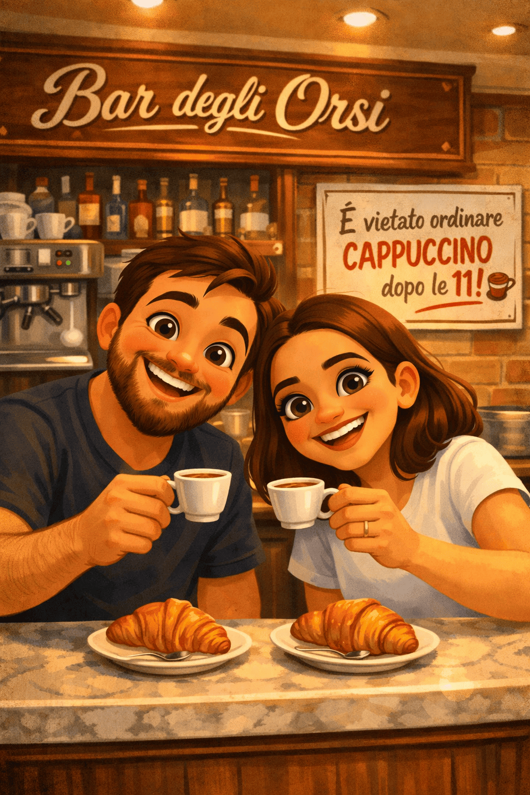
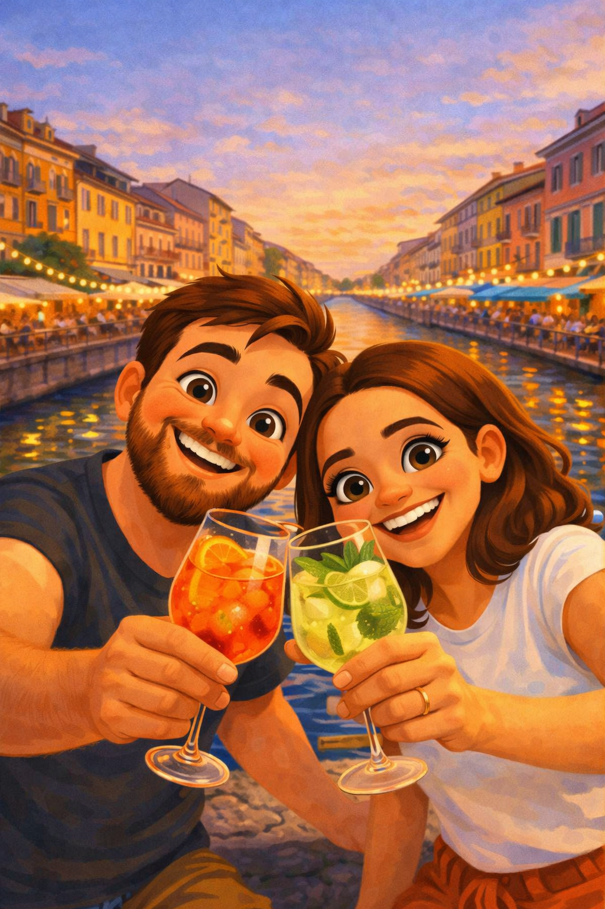
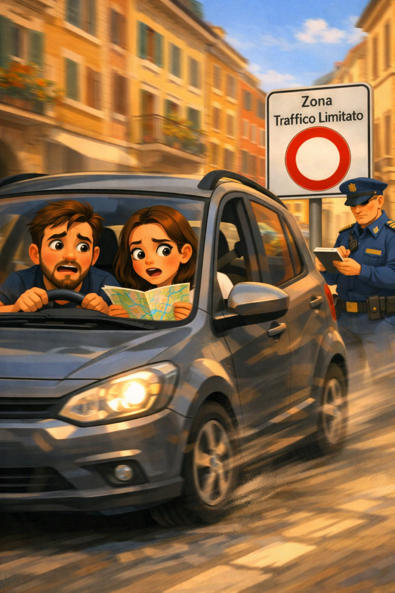
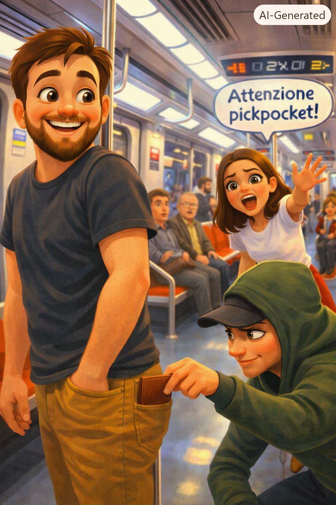
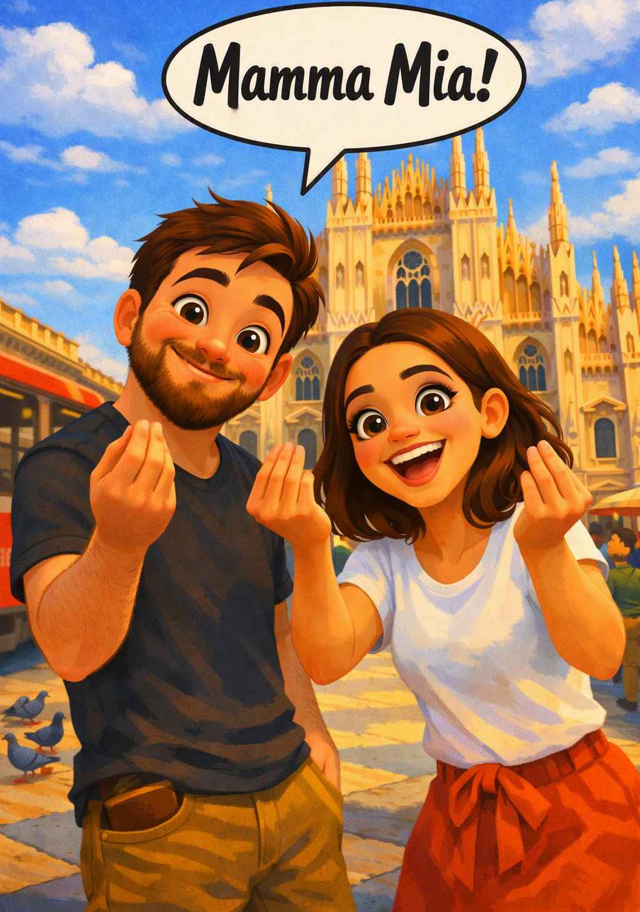

Curiosidades e dicas sobre a Itália
🕒 Horários e alimentação

Na Itália, os horários são diferentes do que a gente está acostumado.
- Almoço e jantar: o almoço rola por volta das 13h e o jantar só depois das 20h. Se você tem um restaurante específico em mente, reserve antes, porque os lugares mais disputados lotam rápido.
- Café da manhã: esqueça mesas fartas de hotel com mil opções. Aqui é café expresso e um croissant (cornetto) — simples e direto. Até nos hotéis, não espere aquele banquete matinal estilo brasileiro.
- Supermercados: aproveite para comprar produtos locais e diferentes, tipo queijos, embutidos e vinhos que você não encontra no Brasil. É uma experiência por si só.
Dica dos Ussinhos 🐻💡: evite restaurantes com cardápio em inglês cheio de fotos e com alguém na porta te chamando. Prefira lugares com menu simples e, principalmente, onde você vê italianos comendo. É ali que mora a comida de verdade!
🍹 O costume do aperitivo

Entre 18h e 20h, os bares oferecem o famoso aperitivo: você pede uma bebida (em média €8–12) e ganha acesso a petiscos ou até mini-buffets. É quase um jantar disfarçado de happy hour.
Dica dos Ussinhos 🐻💡: vá em bares fora das áreas turísticas. O preço é melhor e os petiscos são mais caprichados.
🍽️ O que é o coperto?
Nos restaurantes, é comum cobrar uma taxa fixa chamada coperto. Ela cobre o serviço de mesa e o pão servido.
- Valor: geralmente entre €1 e €3 por pessoa.
- Não é gorjeta, mas sim uma prática cultural.
- Na Itália não é comum dar gorjeta aos garçons. O coperto já faz essa função.
🚗 Atenção à ZTL (Zona a Traffico Limitato)

Se você pretende alugar carro, cuidado com as áreas de tráfego limitado nos centros históricos. Entrar sem autorização gera multa automática, porque as câmeras não perdoam.
Dica dos Ussinhos 🐻💡: o transporte público é eficiente… mesmo com as mil greves por ano. Então pense bem antes de se aventurar de carro!
🍦 Gelaterias
Outro detalhe que aprendemos rápido: se você ver uma gelateria com uma “montanha de sorvete” colorida exposta na vitrine, fuja! O verdadeiro gelato italiano não tem consistência suficiente para ficar empilhado daquele jeito.
Dica dos Ussinhos 🐻💡: prefira gelaterias onde o sorvete fica guardado em recipientes fechados. É ali que você encontra o gelato de verdade. E claro, vamos indicar nossas favoritas no Mapa dos Ussinhos.
⚠️ Attenzione Pickpocket!

Além dos golpes clássicos (braceletes “de presente”, ajuda suspeita em máquinas de bilhete, pedidos de assinatura em papéis), fique atento aos pickpockets — os famosos batedores de carteira.
- Adoram lugares cheios: metrô, trens, pontos turísticos.
- Bolsas abertas e celulares no bolso de trás são convites.
Dica dos Ussinhos 🐻💡: se alguém for “gentil demais” tentando te ajudar, já desconfie. Gentileza italiana existe, mas não vem acompanhada de insistência exagerada.
🗣️ Vocabulário básico

| 🇧🇷 Português | 🇮🇹 Italiano |
|---|---|
| Obrigado | Grazie |
| Por favor | Per favore |
| Desculpe | Scusi |
| Bilhete | Biglietto |
| Quanto custa? | Quanto costa? |
| Bom dia | Buongiorno |
| Boa noite | Buonasera |
| Onde fica... | Dov’è |
| Banheiro | Bagno |
| Parada | Fermata |
| Eu gostaria... | Vorrei |
| Não falo italiano | Non parlo italiano |
Dica dos Ussinhos 🐻💡: mesmo falando só “grazie”, você já ganha pontos de simpatia.